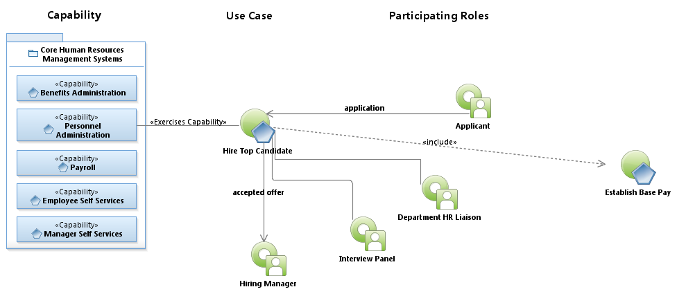
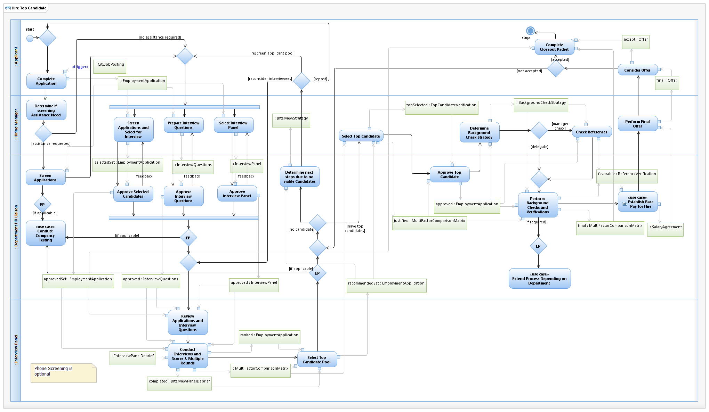

Use Case Model: Hire Top Candidate
Architect: Aaron Brown, IT Enterprise Architect Senior
Date Last Modified: 11/12/2012
User Review: Sonya Alexander-Harry, Roberta Byram
Date: 02/11/2013
Candidates respond to a city job posting by submitting applications within a designated timeframe. Candidates are then screened, interviews are completed, background checks are performed and top candidates are selected, facilitated by HRD for executive level and high profile positions, and the department for all others.
Follow link to Role Definitions

Use Case Model: Hire Top Candidate

Activity Model: Hire
Top Candidate
Activity Documentation
| Activity | Documentation |
|---|---|
| Complete Application | Upon job posting, the system collects applicants for defined period of time, scores and ranks based on qualifying questions in the posting. |
| Complete Closeout Packet | The hiring candidate checklist includes: Offer letter, top candidate verification form, zone determination form (compensation form), reference check/employment verification forms, assessment results from all interviewees, interview guide and interview schedule. candidate multi factor comparison matrix, interview debrief summary forms, interview notes of each panel member, applications and resumes for all candidates interviewed, minimum qualifications verifications, all interview questions and tools used for interviews. Copies of assessments with screening criteria, copy of job posting, copy of any advertisement/newspaper/etc, and posting analysis form. |
| Screen Applications and Select for Interview | Screens applications. This may be delegated to their staff. Selects candidates based on preferred qualifications and scores. determines selection process (i.e., hiring panel, interview questions, location, time-lines, logistics, etc.) |
| Prepare Interview Questions | Prepared interview questions, based on the job posting. |
| Select Interview Panel | No nepotism. |
| Select Top Candidate | select top candidate based on the Candidate "multi factor comparison matrix" |
| Approve Selected Candidates | Approves, makes recommendations, interview questions and hiring process. |
| Perform Background Checks and Verifications | Perform reference checks, testing (some Hiring Managers perform reference checks themselves). Perform background checks Not relevant for all positions APD Driving drug testing, criminal background check Used for purposes other than for hiring (ex. disciplinary investigations) Aviation Nerc/Ferc AFD EMS Interfaces with DPS Also eligibility is verified... are they allowed to be rehired (determined within their personnel file and in Banner.) |
| Negotiate Salary Agreement | The HR Liaison (the department) review the Employee's work history, to determine the appropriate Zone qualified. If the offer is within the zone qualifed, the process continues, if not, the EFFECT SALARY EXCEPTION process is used. |
| Conduct Interviews and Scores | Includes Hiring Manager, Facilitator, Panel members and applicant. Includes scoring and ranking and selecting the top candidate. Includes testing and other potential requirements depending on position There are three scoring methods taht can be used during an interview. They are: strengths and weaknesses, strong/moderate/weak, or using a numerical scoring/ranking form. The hiring manager should consult the "Interview Guide" and review with panel members at start of interview. |
Note: When the activity is self explanatory no documentation is provided.